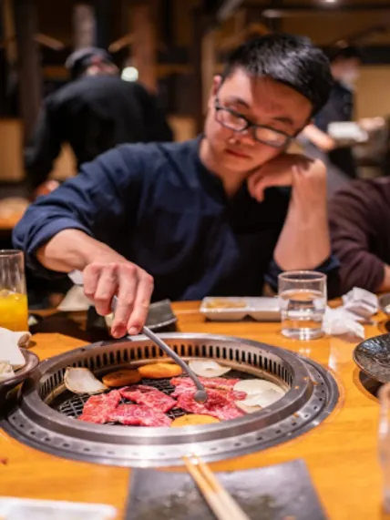

Prof. Christos Bouganis
Professor of Intelligent Digital Systems
Director of iDSL · Director of Undergraduate Studies (EEE)
A team of researchers working across hardware acceleration, machine learning and computer vision, led by Prof. Christos Bouganis.
Professor of Intelligent Digital Systems
Director of iDSL · Director of Undergraduate Studies (EEE)

Postdoctoral Researcher

Postdoctoral Researcher

PhD Candidate

PhD Candidate

PhD Candidate

PhD Candidate (co-supervised)

PhD Candidate

PhD Candidate

PhD Candidate
Graduated PhD students, and where they went next.
Previous member: Mário Lopes Ferreira, former Research Assistant, now at NEC Telecom Modus.
We are always looking for motivated PhD students, postdocs and undergraduate researchers.
Work with us